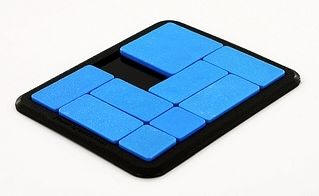

Depth First and Breath First Search¶
Overview¶
A number of puzzles can be solved by either depth first search or breadth first search.
Both are easy to implement using collections.deque().

Generic Puzzle Solver¶
Here I present a generic puzzle solver that works on a broad class of puzzles.
The core idea is that we need very few things to describe the puzzle in a way that a solver can find a solution:
- We need an initial position (the unsolved puzzle)
- We need a rule (typically an iterator) to generate all possible moves from a position.
- We need to recognize the goal state.
Optionally, we can provide some extras:
- A nice
__repr__method to display the puzzle position in a way recognizable to us. - A way to recognize that some positions are considered to be equivalent and don’t need to be explored twice (i.e. in tic-tac-toe, all four corner opening moves essentially describe the same).
Jug Filling Problem¶
Problem statement: “Given a two empty jugs with 3 and 5 liter capacities and a full jug with 8 liters, find a sequence of pours leaving four liters in the two largest jugs.”

How to code it:
from puzzle import Puzzle
class JugFill(Puzzle):
'''Given a two empty jugs with 3 and 5 liter capacities and a full
jug with 8 liters, find a sequence of pours leaving four liters
in the two largest jugs.
'''
# https://dioverdt.files.wordpress.com/2011/01/jugs-problem.gif
pos = (0, 0, 8)
capacity = (3, 5, 8)
goal = (0, 4, 4)
def __iter__(self):
for i in range(len(self.pos)):
for j in range(len(self.pos)):
if i==j: continue
qty = min(self.pos[i], self.capacity[j] - self.pos[j])
if not qty: continue
dup = list(self.pos)
dup[i] -= qty
dup[j] += qty
yield JugFill(tuple(dup))
if __name__ == '__main__':
from pprint import pprint
pprint(JugFill().solve())
How a puzzle instance works:
>>> from pprint import pprint
>>> from jug_fill import JugFill
>>> p = JugFill() # Make a fresh puzzle
>>> print(p) # Display the current position
(0, 0, 8)
>>> p.isgoal() # Are we at the goal state?
False
>>> for move in p: # Display possible moves
... print(move)
...
(3, 0, 5)
(0, 5, 3)
Running the solve() method immediately generates a solution:
[(0, 0, 8),
(0, 5, 3),
(3, 2, 3),
(0, 2, 6),
(2, 0, 6),
(2, 5, 1),
(3, 4, 1),
(0, 4, 4)]
Sliding Block Puzzle¶
Problem statement: “Slide blocks within a fixed grid so that the largest block ends-up in the lower left corner.”
How to code it:
from puzzle import Puzzle
import re
class PaPuzzle(Puzzle):
''' PaPuzzle
This sliding block puzzle has 9 blocks of varying sizes:
one 2x2, four 1x2, two 2x1, and two 1x1. The blocks are
on a 5x4 grid with two empty 1x1 spaces. Starting from
the position shown, slide the blocks around until the
2x2 is in the lower left:
1122
1133
45
6788
6799
'''
pos = '11221133450067886799'
goal = re.compile( r'................1...' )
def isgoal(self):
return self.goal.search(self.pos) != None
def __repr__(self):
ans = '\n'
pos = self.pos.replace('0', '.')
for i in [0, 4, 8, 12, 16]:
ans = ans + pos[i:i+4] + '\n'
return ans
xlat = str.maketrans('38975','22264')
def canonical(self):
return self.pos.translate(self.xlat)
block = { (0,-4), (1,-4), (2,-4), (3,-4),
(16,4), (17,4), (18,4), (19,4),
(0,-1), (4,-1), (8,-1), (12,-1), (16,-1),
(3,1), (7,1), (11,1), (15,1), (19,1) }
def __iter__(self):
dsone = self.pos.find('0')
dstwo = self.pos.find('0', dsone+1)
for dest in [dsone, dstwo]:
for adj in [-4, -1, 1, 4]:
if (dest, adj) in self.block: continue
piece = self.pos[dest+adj]
if piece == '0': continue
newmove = self.pos.replace(piece, '0')
for i in range(20):
if 0 <= i+adj < 20 and self.pos[i+adj]==piece:
newmove = newmove[:i] + piece + newmove[i+1:]
if newmove.count('0') != 2: continue
yield PaPuzzle(newmove)
if __name__ == '__main__':
from pprint import pprint
pprint(PaPuzzle().solve())
Output:
[
1122
1133
45..
6788
6799
,
1122
1133
4.5.
6788
6799
,
-- ... ---
7633
7622
1154
1199
..88
,
7633
7622
..54
1199
1188
]
Core Logic¶
The only essential Python tool you need is collections.deque(),
the double ended queue.
For a breadth first search, we pop an unexplored positions off of a deque. For each position, we generate the next possible moves and prepend them to the deque of unexplored move.
For a depth first search, we append rather than prepend.
To make it possible to replay the sequence of moves, we keep a trail dictionary that maps each move to its predecessor.
As an optimization, we call an optional user supplied canonical() method to see if the current position is equivalent to one that we’ve already explored.
def solve(pos, depthFirst=False):
queue = deque([pos])
trail = {intern(pos.canonical()): None}
solution = deque()
load = queue.append if depthFirst else queue.appendleft
while not pos.isgoal():
for m in pos:
c = m.canonical()
if c in trail:
continue
trail[intern(c)] = pos
load(m)
pos = queue.pop()
while pos:
solution.appendleft(pos)
pos = trail[pos.canonical()]
return list(solution)